판금제관기능장 (2005-04-03 기출문제)
1과목: 임의 구분
1. 재료의 기호 SS330 의 올바른 설명은?
- 용접구조용 강재로써 탄소함유량이 0.41%라는 뜻이다
- 일반 구조용 압연강재로서 최소 인장강도가 330 MPa 이라는 뜻이다.
- 탄소 강재로써 탄소 함유량이 0.41%라는 뜻이다.
- 구조용 강재로써 허용인장강도가 330 MPa 이라는 뜻이다.
(정답률: 86%)

2. 탄소강에서 탄소함량이 증가함에 따라 감소하는 것은 ?
- 항복점
- 경도
- 인장강도
- 단면 수축률
(정답률: 80%)
3. L50x50x6인 형강을 90°로 굽히려고 한다. 이 때 재료의 압축에 의한 팽창을 고려하여 절단부 금긋기를 할 경우 절단 여유길이(a)를 얼마로 하는것이 적당한가?
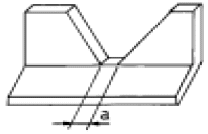
- 3 mm
- 5 mm
- 7 mm
- 9 mm
(정답률: 67%)
4. 금형에서 제품이 펀치나 다이에 끼는 것을 털어내는 역할을 하는 것은?
- 패킹 플레이트(packing plate)
- 펀치 플레이트(punch plate)
- 녹 아웃(knock out)
- 스토퍼(stopper)
(정답률: 70%)
5. 금속 판재가 갈라지지 아니하고 구부릴 수 있는 반지름을 최소 굽힘 반지름이라하는데 최소굽힘 반지름에 영향을 미치지 않는 것은?
- 판의 두께
- 판의 나비
- 판의 길이
- 판의 재질
(정답률: 82%)
6. 다음 중 냉간가공에 해당되는 것은?
- 금(Au) : 350℃에서 가공
- 철(Fe) : 300℃에서 가공
- 알루미늄(Al) : 300℃에서 가공
- 아연(Zn) : 150℃에서 가공
(정답률: 75%)
7. 굽힘 가공에 관한 설명 중 맞는 것은?
- 최소 굽힘 반지름은 판 두께가 얇을수록 작아진다.
- 방향성이 있는 재료에서는 압연방향이 굽힘축에 수직으로 될 때 최소 굽힘 반지름은 크게 된다.
- 굽힘 가공부의 안쪽은 인장 응력을 받고 바깥쪽은 압축 응력을 받는다.
- 다이의 어깨 나비가 작을수록 스프링백의 양은 작아진다.
(정답률: 43%)
8. 다음 중 스프링 백의 양이 큰 재료는?
- 연성과 인성이 큰 재료
- 탄성 한계와 강도가 큰 재료
- 취성과 경도가 큰 재료
- 두께가 두꺼운 재료
(정답률: 58%)
9. 다음 용접법 중 용접열원을 기준으로 하여 분류할 때 성질이 다른 것은?
- 가스 용접
- 피복금속 아크 용접
- 서브머지드 아크 용접
- 불활성가스 아크 용접
(정답률: 75%)
10. 다음 중 인력을 이용하지 않는 프레스는?
- 나사 프레스
- 편심 프레스
- 마찰 프레스
- 아버 프레스
(정답률: 64%)
11. 다음 기하공차의 기호를 표시한 것 중 틀린 것은?
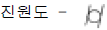
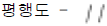
(정답률: 75%)
12. 길이 1 m인 외팔보의 자유단에서 40 cm 지점에 500 N의 집중하중이 작용할 때 최대 굽힘모멘트는 몇 N·m 인가?
- 200
- 20000
- 300
- 30000
(정답률: 57%)
13. 강철을 어느 조직으로 담금질하는 것이 최대의 경도를 얻을 수 있는가?
- 마텐자이트(martensite) 조직
- 트루스타이트(troostite) 조직
- 소르바이트(sorbite) 조직
- 펄라이트(pearlite) 조직
(정답률: 79%)
14. 연강의 인장시험에 의한 응력-변형률 선도에서 시험편의 처음 단면적 및 파괴 단면적을 A0 및 A1이라고 하면 단면수축률을 나타내는 관계식은?
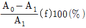
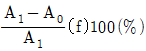
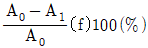
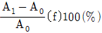
(정답률: 50%)
15. 업세팅(Up setting) 가공은 어떤 가공법에 속하는가?
- 비딩 가공
- 압축 가공
- 드로잉 가공
- 굽힘 가공
(정답률: 67%)
16. 다음 중 보일러용으로 사용되는 리벳 재료의 인장강도는 몇 kgf/mm2 정도 인가?
- 31 ~ 36
- 51 ~ 58
- 41 ~ 46
- 61 ~ 68
(정답률: 65%)
17. 한계 게이지(limit gauge)의 특징에 관한 설명 중 틀린 것은 ?
- 제품의 실제 치수를 읽을 수 있다.
- 조작이 간단하고 경험을 필요로 하지 않는다.
- 대량 측정에 적합하고 합격, 불합격의 판정을 쉽게 할 수 있다.
- 측정치수가 정해지면 한 개의 치수마다 게이지가 필요하다.
(정답률: 59%)
18. 다음 그림과 같이 철판을 굽히려고 한다. 철판의 전체 소요길이 L값은? (단, 단위는 mm임.)
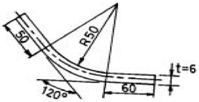
- 약 165.5 mm
- 약 175.5 mm
- 약 185.5 mm
- 약 195.5 mm
(정답률: 54%)
19. 다음 재료 기호중 용접 구조용 압연 강재를 나타내는 것은?
- SPHC
- SGHC
- SM
- SBB
(정답률: 65%)
20. 다음중 리벳팅 작업을 하는데 관련이 제일 적은 공구는?
- 스냅(snap)
- 클램프(clamp)
- 돌리(dolly)
- 해칫(hatchet)
(정답률: 65%)
2과목: 임의 구분
21. 판 두께가 두껍고 긴 것을 연속적으로 전단하는데 가장 적합한 전단기는?
- 갭 전단기(gap shear)
- 스퀘어 전단기(square shear)
- 갱 슬리터(gang slitter)
- 바이브로 시어(vibro shear)
(정답률: 72%)
22. 아래 그림과 같은 구부러진 재료의 블랭크(Blank) 길이 L을 구하는 식은? (단, t는 판두께, C는 늘음 보정값)
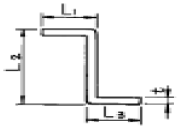
- L1 + L2 + L3 - C
- L1 + L2 + L3 - 2C
- L1 + L2 + L3 - t
- L1 + L2 + L3 - 2t
(정답률: 69%)
23. 드로잉 제품의 직경이 120 mm이고 성형높이가 30 mm로 드로잉할 때 드로잉률은?
- 0.5⑤
- 0.606
- 0.707
- 0.808
(정답률: 79%)
24. 다음 중 초음파 검사법의 종류가 아닌 것은?
- 투과법
- 펄스 반사법
- 공진법
- 맥류법
(정답률: 65%)
25. 다음 재료중 드로잉용으로 쓰이는 냉간압연강판은?
- SPCD
- SPS 5
- SBV 34
- SWS 41
(정답률: 67%)
26. 그림과 같은 4각뿔을 전개하려고 한다. 이때 능선의 길이 L은 얼마인가 ? (단, 단위는 mm임)
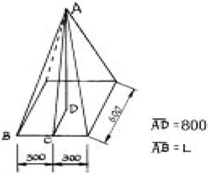
- 858.3
- 867.2
- 9⑤.5
- 927.1
(정답률: 63%)
27. 테르밋 용접의 테르밋은 무엇의 혼합물인가?
- 알루미늄과 마그네슘 분말
- 알루미늄과 산화철의 분말
- 마그네슘과 산화철의 분말
- 규소와 알루미늄 분말
(정답률: 58%)
28. 다음 중 스피닝 선반(spining lathe)으로 하는 작업은?
- 판재를 둥글게 성형하는데 쓴다.
- 이음매 없는 그릇같은 용기를 만드는데 쓴다.
- 가장자리를 구부리는데 쓴다.
- 임의의 곡선으로 자르는데 쓴다.
(정답률: 58%)
29. 리벳의 지름이 20 mm이고, 철판의 두께 10 mm인 재료로 다음 그림과 같이 리벳 작업을 하려 한다. 리벳의 피치(pitch)는 몇 mm 로 해야 하는가? (단, 철판의 허용 인장응력는 40 kgf/mm2 이고 리벳의 허용 전단응력은 50 kgf/mm2 이라고 한다.)
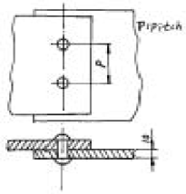
- 39.5
- 49.3
- 59.3
- 68.5
(정답률: 55%)
30. 단면에 해칭을 할 때 사용하는 선의 종류는 ?
- 가는 실선
- 굵은 실선
- 은선
- 가상선
(정답률: 80%)
31. 전단가공(blanking)에서 틈새(clearance)가 작을 경우에 해당하지 않는 것은?
- 캠버(camber) 현상이 적어진다.
- 전단면이 커지며 깨끗한 가공이 된다.
- cutting edge 하중이 작으므로 마모가 작다.
- 제품의 정도가 향상된다.
(정답률: 54%)
32. 용접 변형과 잔류응력을 경감하는 일반적인 방법이 아닌 것은?
- 억제법
- 역변형법
- 스킵법
- 초음파법
(정답률: 74%)
33. 얇은 금속판에 큰 구멍을 뚫는데 가장 적당한 펀치는?
- 중공 펀치
- 핀 펀치
- 센터 펀치
- 프릭 펀치
(정답률: 74%)
34. 판금 제품의 보강이나 모양을 보기 좋게하기 위해 한 쌍의 오목하고 볼록한 롤러 사이에 판재를 넣고 가공하는 기계는?
- 프레스 브레이크
- 벤딩 롤러
- 비딩 머신
- 탄젠트 벤더
(정답률: 72%)
35. 아래의 용접기호에서 원은 무엇을 나타내는가 ?
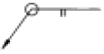
- 특별 지시사항
- 현장 용접
- 용접 종류
- 전체 둘레 용접
(정답률: 54%)
36. 전단 길이 100 mm, 판 두께 6 mm, 전단 저항 30 kgf/mm2 일 때의 최대 전단하중은 몇 kgf 인가?
- 1800
- 18000
- 36000
- 54000
(정답률: 60%)
37. 다음 중 알루미늄의 내식성을 더욱 향상시키고 아름다운 피막을 얻는 방법이 아닌 것은?
- 알루마이트법
- 두랄루민법
- 황산법
- 크롬산법
(정답률: 60%)
38. 강판의 결함 중 판을 우그려 생긴 주름이 겹쳐서 압연된 것을 무엇이라 하는가?
- 피트(pit)
- 스케일(scale)
- 스케브(scab)
- 핀칭(pinching)
(정답률: 65%)
39. 실루민(silumin)은 어떤 합금인가 ?
- 알루미늄 합금
- 구리 합금
- 마그네슘 합금
- 니켈 합금
(정답률: 79%)
40. 보일러 등과 같은 압력용기 드럼(drum)의 현도 작업시 고려해야 할 사항으로 틀린 것은?
- 용접 수축여유를 더해 주어야 한다.
- 가스절단 여유를 더해 주어야 한다.
- 원통끝 굽힘 여유를 더해 주어야 한다.
- 원통 안쪽의 압축여유를 더해 주어야 한다.
(정답률: 54%)
3과목: 임의 구분
41. 용접변형을 줄이는 방법이 아닌 것은?
- 용접순서를 지킬 것
- 입열 및 용착량을 크게 할 것
- 지그 및 고정구를 사용할 것
- 예열을 할 것
(정답률: 64%)
42. TIG 용접에서 청정효과(cleaning action)을 일으켜 주는 것은 어떤 조건에서 인가?
- 적절한 flux를 사용하였을 때
- 역극성으로 연결하였을 때
- CO2가스를 사용하였을 때
- 높은 전압을 걸어 주었을 때
(정답률: 77%)
43. 불활성 가스 아크 용접의 특징으로 틀린 것은?
- 열 집중으로 용접 속도가 느리다.
- 청정작용으로 용제없이도 용접할 수 있다.
- 불활성가스를 사용하므로 산화, 질화를 방지한다.
- 스테인리스강, 알루미늄의 용접에 사용된다.
(정답률: 50%)
44. 프레스에 의한 전단가공시 펀치에 의해 잘라진 재료가 다이 구멍 밖으로 잘 빠지게 하기 위하여 다이(die)에 주는 것은 ?
- 경사각(slip angle)
- 전단각(shear angle)
- 틈새(clearance)
- 스토퍼(stopper)
(정답률: 79%)
45. 직경이 120 mm이고 높이가 50 mm이며, 바닥 모서리가 예리한 원통형 용기를 드로잉(drawing)하려고 한다. 블랭크(blank)의 직경은 몇 mm 인가?
- 158
- 196
- 288
- 322
(정답률: 55%)
46. 소재를 일정 온도에서 가열한 후 안정된 공기 중에서 냉각시켜 미세하고 균일한 표준화된 조직을 얻는 열처리는?
- 담금질
- 뜨임
- 풀림
- 노멀라이징
(정답률: 75%)
47. 압연강판의 열간가공과 냉간가공의 구별은 무엇을 기준으로 하는가?
- 탬퍼링 온도
- 변태 온도
- 재결정 온도
- 풀림 온도
(정답률: 74%)
48. 보일러와 같이 기밀을 필요로할 때는 리벳팅 작업이 끝난 뒤에 리벳머리의 주위와 강판의 가장자리를 정과 같은 공구로 때리는데 이러한 작업은?
- 트리밍(trimming)
- 코킹(caulking)
- 셰이빙(shaving)
- 펀칭(punching)
(정답률: 72%)
49. 표면 경화 방법 중 산소-아세틸렌을 사용하는 것은?
- 하드 페이싱
- 질화법
- 화염경화법
- 숏 피닝법
(정답률: 85%)
50. 니켈-크롬-몰리브덴강에서 뜨임취성을 방지하는 원소로 대표적인 것은 ?
- Cr
- Mn
- Mo
- Ni
(정답률: 65%)
51. 다음 중 전단저항을 구하는 방법으로 가장 옳은 것은 ?
- 최대하중/전단길이
- 최단면적/최대하중
- 최대하중/전단면적
- 전단강도/전단길이
(정답률: 50%)
52. 다음 중 아크 절단에 속하지 않는 것은?
- 산소 아크 절단
- 탄소 아크 절단
- TIG 절단
- 금속 아크 절단
(정답률: 70%)
53. 탄소강의 열처리 후 냉각방법으로 옳은 것은?
- 풀림 후에는 수중에서 급냉한다.
- 불림 후에는 수중에서 급냉한다.
- 담금질 후에는 수중 또는 유중에서 급냉한다.
- 뜨임 후에는 유중에서 급냉한다.
(정답률: 77%)
54. 압력용기의 동체 양쪽 끝에 덮어씌우는 경판에서 동체와 연결되는 직선부의 길이는?
- 5 mm 이상
- 10 mm 이상
- 20 mm 이상
- 40 mm 이상
(정답률: 65%)
55. 파레토그림에 대한 설명으로 가장 거리가 먼 내용은?
- 부적합품(불량), 클레임 등의 손실금액이나 퍼센트를 그 원인별, 상황별로 취해 그림의 왼쪽에서부터 오른쪽으로 비중이 작은 항목부터 큰 항목 순서로 나열한 그림이다.
- 현재의 중요 문제점을 객관적으로 발견할 수 있으므로 관리방침을 수립할 수 있다.
- 도수분포의 응용수법으로 중요한 문제점을 찾아내는 것으로서 현장에서 널리 사용된다.
- 파레토그림에서 나타난 1∼2개 부적합품(불량) 항목만 없애면 부적합품(불량)률은 크게 감소된다.
(정답률: 54%)
56. 원재료가 제품화 되어가는 과정 즉 가공, 검사, 운반, 지연, 저장에 관한 정보를 수집하여 분석하고 검토를 행하는 것은?
- 사무공정 분석표
- 작업자공정 분석표
- 제품공정 분석표
- 연합작업 분석표
(정답률: 75%)
57. 수요예측 방법의 하나인 시계열분석에서 시계열적 변동에 해당되지 않는 것은?
- 추세변동
- 순환변동
- 계절변동
- 판매변동
(정답률: 62%)
58. 다음 내용은 설비보전조직에 대한 설명이다. 어떤 조직의 형태인가?
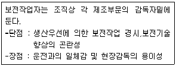
- 집중보전
- 지역보전
- 부문보전
- 절충보전
(정답률: 67%)
59. 다음 중 검사를 판정의 대상에 의한 분류가 아닌 것은?
- 관리 샘플링검사
- 로트별 샘플링검사
- 전수검사
- 출하검사
(정답률: 77%)
60. nP관리도에서 시료군마다 n=100 이고, 시료군의 수가 k=20 이며, ΣnP = 77이다. 이때 nP관리도의 관리상한선 UCL을 구하면 얼마인가?
- UCL = 8.94
- UCL = 3.85
- UCL = 5.77
- UCL = 9.62
(정답률: 43%)